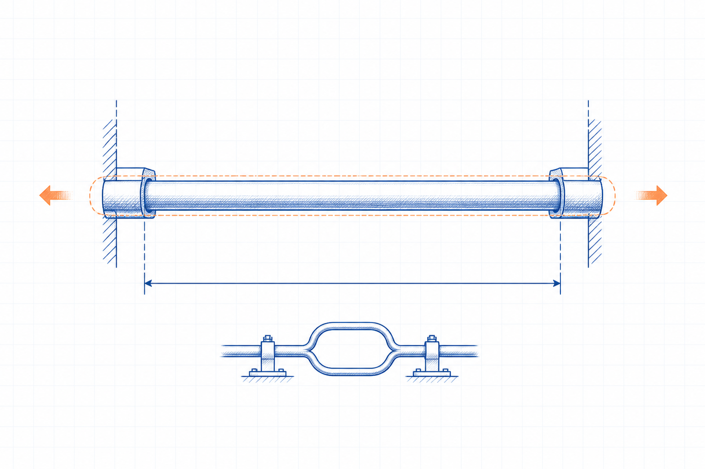

Engineering principle
Thermal Expansion: Principles, Formulae and Industrial Applications
Thermal expansion is the dimensional change of a material caused by temperature change. It affects piping, vessels, structures, ductwork, joints, supports and clearances when movement is restrained or accommodated.

- Content type
- Engineering principle
- Level
- Engineering › Thermal Engineering and Boilers › Thermal Expansion and Insulation › Thermal Expansion › Thermal Expansion
- Audience
- Student · Design engineer · Project engineer · Plant engineer
- Last reviewed
- 30 August 2026
What Is Thermal Expansion?
Thermal expansion is the change in length, area or volume that accompanies a temperature change. For a uniform member under a simplified linear model, the change in length is proportional to original length, coefficient of linear expansion and temperature change.
Why Is Thermal Expansion Important in Engineering?
Differential movement can create force, stress, leakage, misalignment, interference or support problems. A movement calculation is an input to an integrated mechanical and piping flexibility assessment, not a substitute for it.
Key Terms and Definitions
- Linear expansion, ΔL
- Change in length; m or mm.
- Original length, L
- Reference length before the stated temperature change.
- Coefficient, α
- Linear expansion coefficient; 1/K or 1/°C.
- Temperature change, ΔT
- Final minus reference temperature; K or °C difference.
Fundamental Principle
A free member changes length as temperature changes. If movement is restrained, the system can develop stress and load depending on material behaviour, geometry, support stiffness, joints and the complete boundary condition.
Formulae, Symbols and Units
Free linear movement
ΔL = α L ΔT
Use α in 1/K, L in m and ΔT in K to obtain ΔL in m.
Thermal strain
εth = α ΔT
This ideal free-strain relation does not determine restrained stress without a suitable mechanical model.
Unit consistency
A temperature difference in K and °C has the same numerical magnitude. Keep length units consistent and do not use a coefficient outside its documented range.
Assumptions and Validity Range
- Material is uniform and the selected coefficient represents the temperature range.
- Temperature is approximately uniform through the member for the simple relation.
- The relation represents free movement, not a full restrained-stress analysis.
Factors Affecting Thermal Expansion
Material and temperature
Expansion coefficients vary by material and may vary with temperature.
Length
Longer members produce larger absolute movement for the same coefficient and temperature change.
Restraint and flexibility
Supports, anchors, guides, bends and expansion devices determine how movement is accommodated.
Types, Classifications or Operating Cases
- Free linear expansion of a straight member.
- Differential expansion of dissimilar materials.
- Piping, duct and vessel systems requiring flexibility analysis.
Step-by-Step Engineering Method
- Define material, installed/reference temperature, operating temperature and free length.
- Obtain a documented coefficient for the relevant temperature range.
- Calculate free movement with ΔL = αLΔT.
- Identify anchors, supports, clearances, connected equipment and differential materials.
- Use the required mechanical or piping stress method for final layout and load assessment.
Illustrative Engineering Example
Hypothetical example — not a design calculation
A straight fabricated member has a defined free length and is heated from its installed temperature to an operating temperature. The calculation estimates free movement before reviewing support and clearance needs.
- Use the documented linear coefficient and the actual temperature change.
- Multiply coefficient, free length and temperature change to obtain ΔL.
- Review whether the system is actually free to move or whether restraint requires a separate stress and load calculation.
The example is not a piping-code flexibility analysis, expansion-joint selection or support-design calculation.
Industrial Applications
- Piping and expansion-loop preliminary studies.
- Boiler, furnace and heat-exchanger equipment layouts.
- Ductwork, structural steel and support clearances.
- Differential movement at material interfaces.
- Thermal insulation and cladding allowance review.
Common Mistakes and Limitations
- Using ambient-temperature coefficient data for a high-temperature range without checking.
- Ignoring the installed/reference temperature.
- Assuming a member is free when connected equipment or supports restrain it.
- Using thermal movement alone to select an expansion joint or pipe support.
Frequently Asked Questions
Does every material expand by the same amount?
No. The coefficient of expansion differs by material and may vary with temperature.
Can thermal expansion create stress?
Yes, when movement is restrained or differential movement is imposed.
Is ΔT in degrees Celsius or kelvin?
For a temperature difference, the numerical interval is the same in °C and K; state the basis clearly.
References
- Incropera, F. P., DeWitt, D. P., Bergman, T. L. and Lavine, A. S. Fundamentals of Heat and Mass Transfer. 8th ed. Wiley. 2017.
- Çengel, Y. A. and Ghajar, A. J. Heat and Mass Transfer: Fundamentals and Applications. 6th ed. McGraw Hill. 2020.
This page is an original educational summary. It does not reproduce protected book text, tables, figures or standards material.